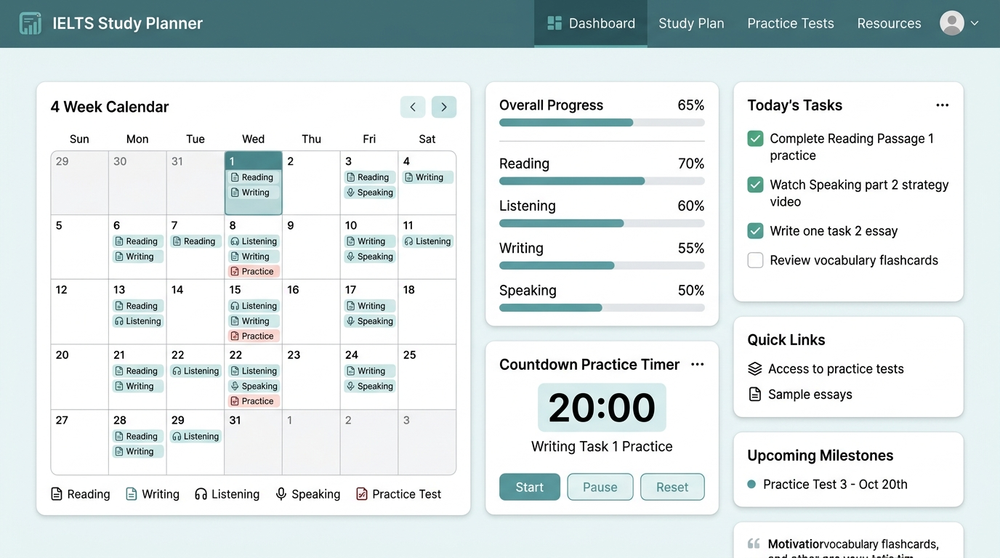

A structured, interactive 30-day IELTS study planner designed to help candidates achieve a strong band score with a focused 4-5 hours daily routine. Track tasks, log scores, analyze mistakes, and time your practice sessions, all within a single, privacy-first web page.

Overview
Preparing for the IELTS exam can feel overwhelming without a clear roadmap. This planner breaks the entire preparation into a structured 4-week, 28-day curriculum built around the official Cambridge IELTS books (Cambridge 16-19).
Each day includes specific tasks across all four modules - Listening, Reading, Writing, and Speaking - progressing from pattern recognition in Week 1 to full mock tests by Week 4.
The planner is built as a single static HTML page with zero backend dependencies. All progress is saved locally in your browser via localStorage, and you can export/import your data as JSON files to sync across devices or create backups.
Learn question types and develop core strategies across all four IELTS modules.
Practice timed exercises and build confidence with increasing difficulty levels.
Full-section practice tests with strict timing and detailed score logging.
Complete mock exams under real conditions with comprehensive review.
Features
From progress tracking to mistake analysis, ielts30 packs a complete study companion into a single, offline-capable web page.
112 checkable tasks across all IELTS modules with visual progress tracking per day, per week, and overall.
Real-time overall completion percentage, per-week mini progress indicators, and a completed days counter.
Countdown timer with presets for Reading (60 min), Listening (30 min), Speaking Cue Card (2 min), and Full Mock Test (2h 45m).
Record your band scores and key takeaways for each day directly on the day card for easy review.
Dedicated section to log recurring mistakes across Reading/Listening and Writing/Speaking modules.
Download your progress as a .json backup and import it on any browser to sync across devices.
Hand-picked IELTS resources including IELTS Liz, British Council, IDP, Cambridge materials, and BBC 6 Minute English.
Full dark mode support with smooth theme transitions and persistent preference saved in localStorage.
No server, no analytics, no cookies. All data stays in your browser's local storage. Your study data is yours alone.
Practice Timer
Practice under real exam conditions with audio notification on completion.
Full section timing
Standard duration
Part 2 preparation
Complete exam simulation
Tech Stack
Built as a single static HTML page with no backend. Runs anywhere a browser runs.
No account needed. No installation. Open in your browser and start preparing for IELTS today.